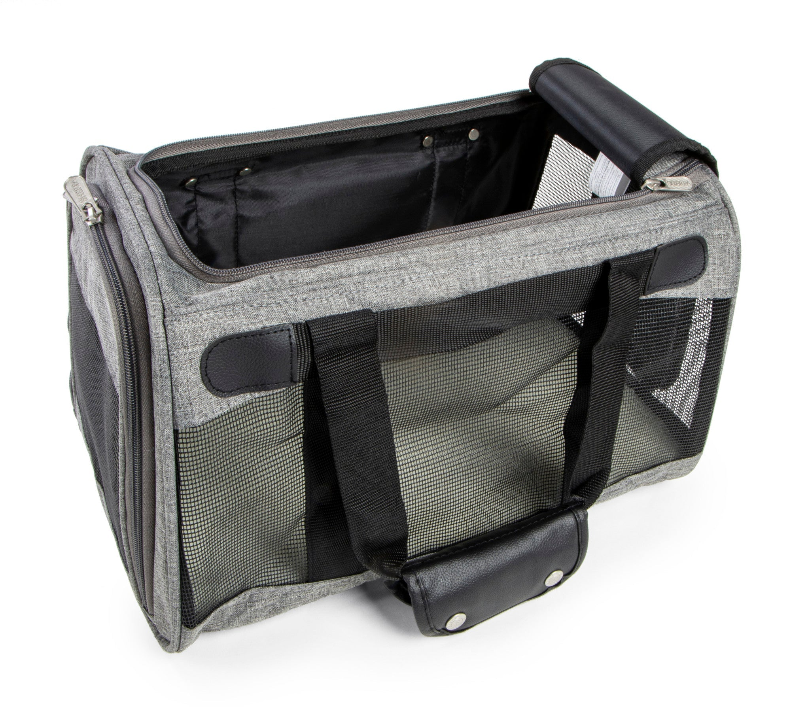
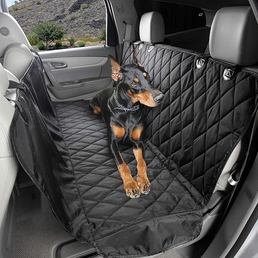
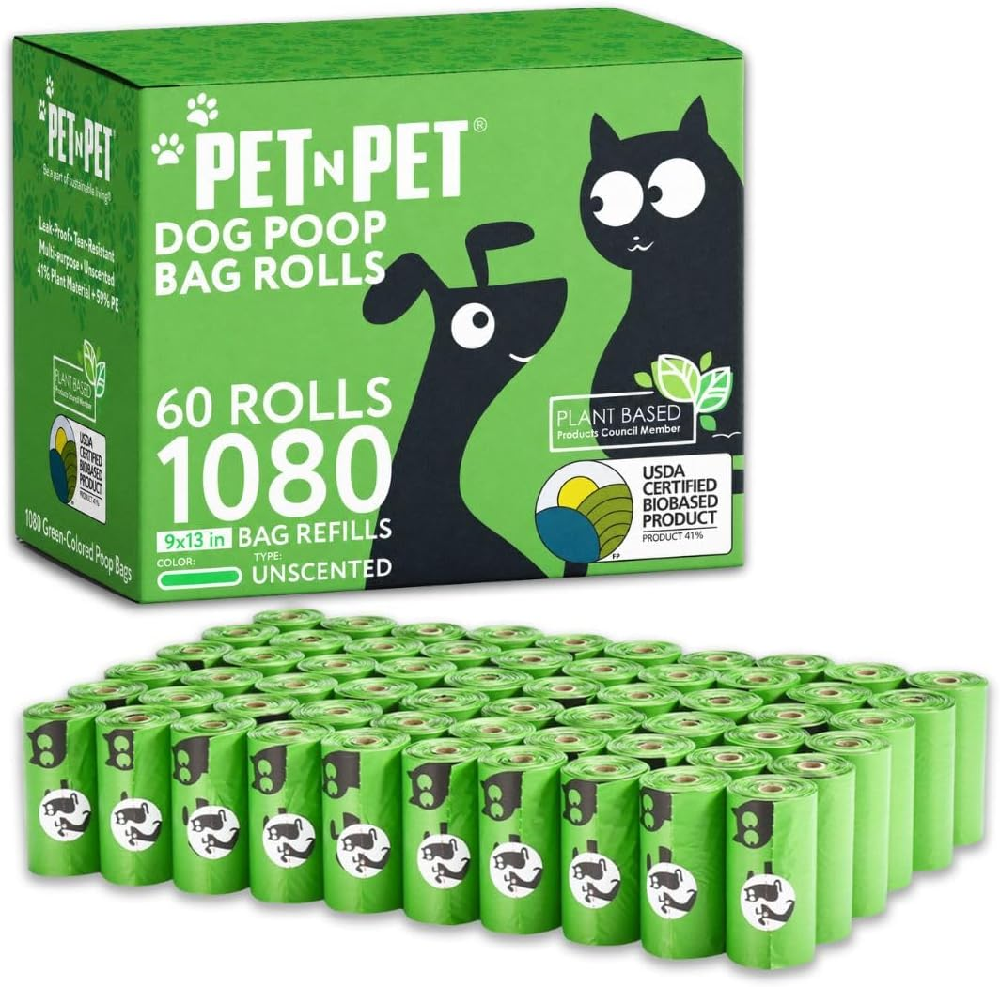
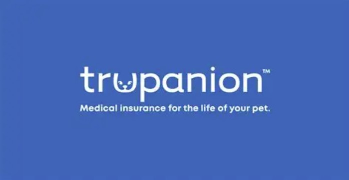
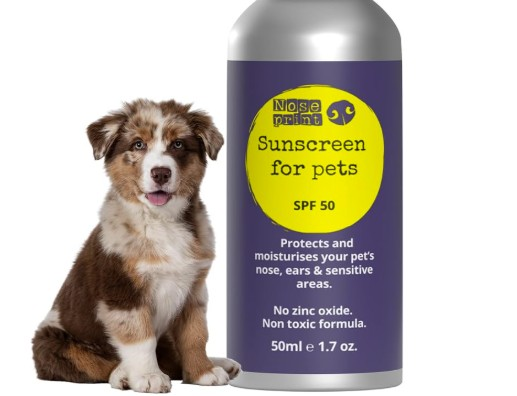
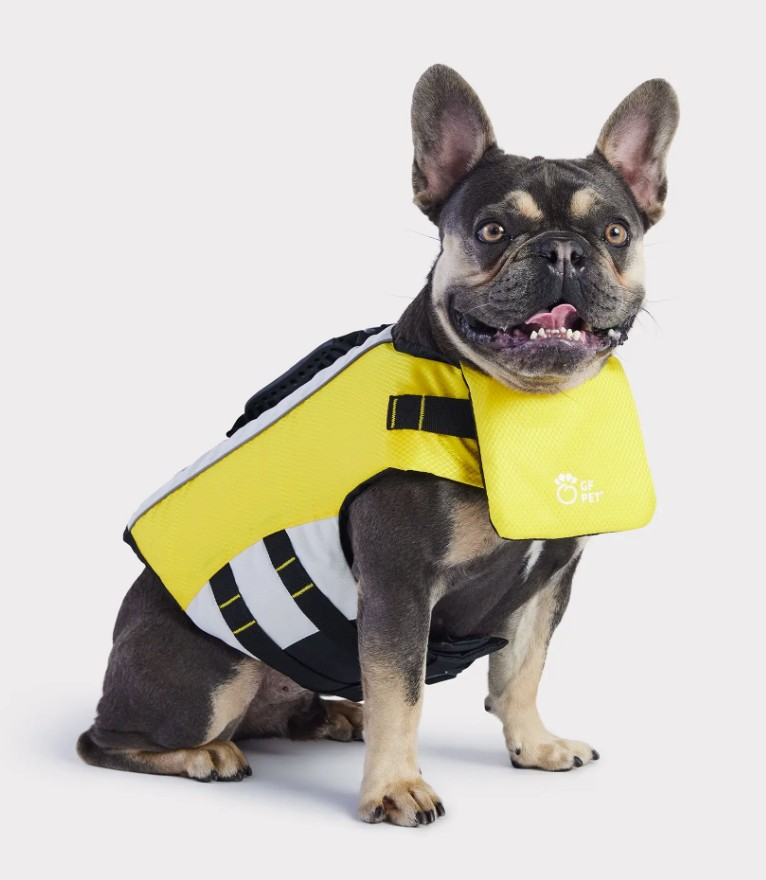
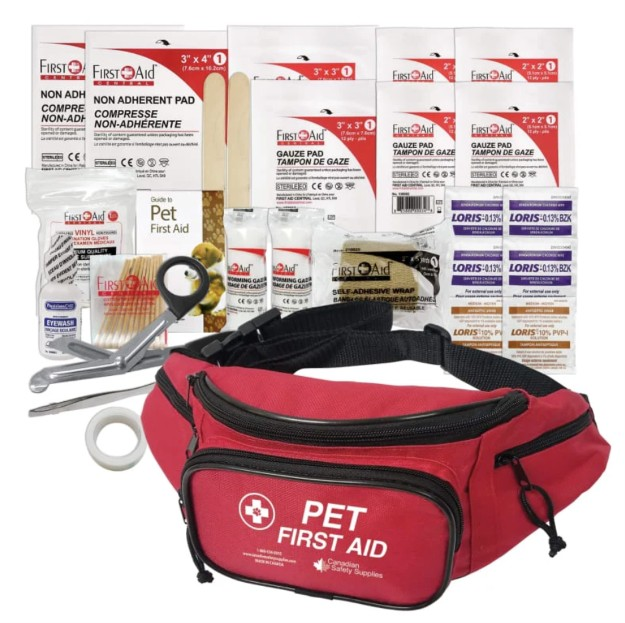

SHERPA Pet Carrier
Sherpa pet carriers let your pet travel in safety and comfort. Our wide range of products blend innovative product design with high-quality materials and the most rigorous safety standards in the industry. When it comes to bringing your pet along for the ride, Sherpa pet carriers have you covered. https://sherpapet.com/

4Knines Seat Cover
Our 4Knines Extra Large Rear Bench Seat Cover with Hammock is a luxurious and beautifully designed cover with a classy look that blends seamlessly with your interior and allows your loving pet to travel safely and comfortably while protecting your seats from fur, dirt and claw marks. Unique high temperature rated non-slip rubber backing and seat anchors will keep the cover securely in place. We use colorfast waterproof durable material that is free of azo dyes and heavy metals and holds dirt and moisture on the cover.

Pet N Pet Waste Bags
Pet N Pet Waste Bags are designed to help you clean up after your pets. These bags are made from durable, leak-proof material and are perfect for cleaning up after your pet during your travels.

Feliway Cat Spray
Feliway Cat Spray is a natural solution to reduce stress and anxiety in cats. It mimics the scent of a healthy cat and helps create a calming environment for your feline friend.

Trupanion Pet Insurance
Trupanion offers comprehensive pet insurance to protect your furry friend's health and your wallet. With 90% coverage for accidents and illnesses, you can focus on what matters most, your pet's wellbeing.

NexGard
NexGard is a monthly oral medication that protects your dog from fleas and ticks. It's easy to give and provides protection for a full month. Ask your veterinarian about NexGard today to see if it's right for your pet.

Sunscreen
A high-quality sunscreen designed for pets to protect them from harmful UV rays during outdoor activities.

Life Vest
A quality flotation device designed for pets to ensure their safety during water activities such as traveling by boat. Make sure to choose the right size for your pet.

First Aid Kit
A comprehensive first aid kit for your pet's needs during travel.